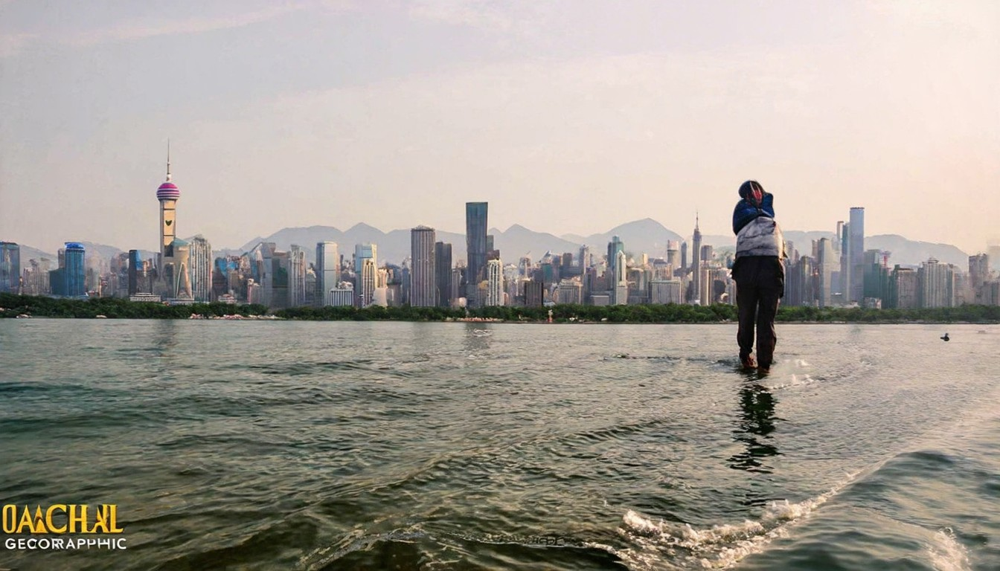
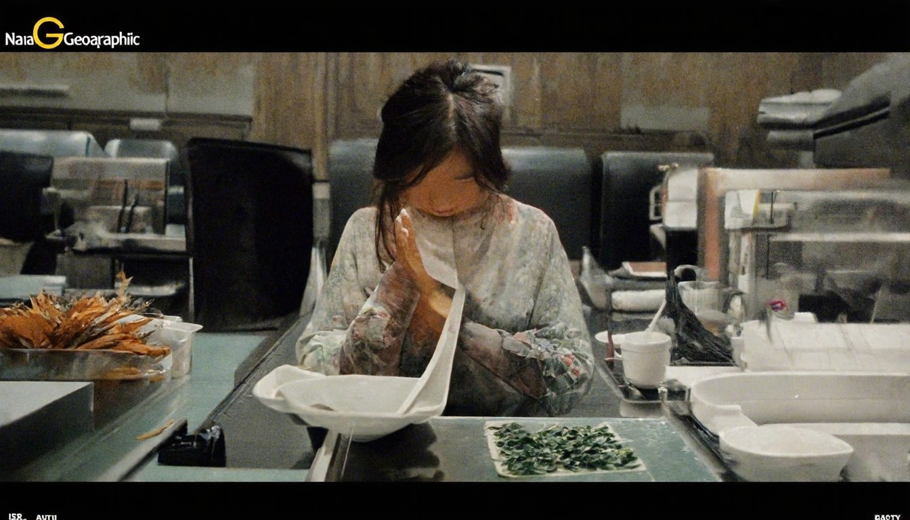

国际新闻 - 美国之音
美国 中国 美中关系 社论 热点视频. 中国时间4:20 2026年4月9日星期四. 国际新闻. 白宫新闻秘书莱维特在白宫举行记者会。
2026年04月09日 · 全球热点速递
← 返回今日新闻美国 中国 美中关系 社论 热点视频. 中国时间4:20 2026年4月9日星期四. 国际新闻. 白宫新闻秘书莱维特在白宫举行记者会。

# 头条. * 中国资产成美以伊冲突“避风港”；伊朗悬赏活捉美军飞行员，已有13名美军死亡；Open 12:31:05. * 专访驾驶张雪机车夺冠的34岁法国“流浪车手”瓦伦丁·德比斯：因为张雪的一句话，我确 15:54:05. * 51万行Claude Code源代码泄露，电子宠物和AI助手遭提前曝光，开发者“抄作业”恐面临法 18:29:55. * 独家对话！带崩全球存储股的谷
# 【時事金掃描】伊朗跪了 霍爾木兹海峽開通 金正恩「跳船」了. 【新唐人北京時間2026年04月08日訊】大家好，歡迎收看「時事金掃描」。我是金然。今天是川普對伊朗政權給出最後通牒的日子，在「劍拔弩張」之下各方的鬥智鬥勇簡直是目不暇接。對了，「時事金掃描」YouTube頻道今天也剛好漲到40萬訂閲，除了感恩，還是感恩，謝謝大家的一路陪伴和支持。這是「直擊伊朗大戰」系列特別節目的第35集。要想瞭解

# 全球被骗？研究机构揭开霍尔木兹海峡被封真相. 【新唐人北京时间2026年04月07日讯】一份最新调查颠覆了外界认知，霍尔木兹海峡其实并没有被全面封锁。研究显示，大量的油轮通过主动关闭应答器或伪造GPS等方式“隐身航行”，形成一层电子迷雾，误导市场判断。分析指出，伊朗革命卫队通过这种操作，一边制造紧张氛围推高油价，一边收取通行费牟利。报告发布后，国际油价已明显回落。. 根据美国独立投资研究机构“
# 【新闻大家谈】伊朗局势剧变 美炸岛50次 以色列提前动手！. 主持人：美国总统川普周一（4月6日）发出最后通牒，如果在美东时间周二（4月7日）晚上8点前，伊朗不达成协议，就会在12点前摧毁伊朗的发电厂、桥梁等重要基础设施。而就在一个小时多前，美伊局势出现重大翻转。川普发贴文把行动时间再次延后两周。 下面我们来连线本台记者张亮，张亮您好，原本最后通牒的美东8点，也就是伊朗凌晨的3点30分截止时间
長島連環命案重大轉折霍伊爾曼突認殺8人15年懸案收尾 · 一洲焦點／停火兩周是緩兵之計？ · 埋怨北約背棄美國人民川普:他們沒通過考驗 · 停火兩周是緩兵之計？ · 以襲黎巴嫩伊朗

美国会议员：中共是全球冲突“推动者”美国会议员：中共是全球冲突“推动者”. 美伊停火两周 油价回落 亚股应声大涨美伊停火两周 油价回落 亚股应声大涨. 川普：美同意休战两周 伊开放霍尔木兹海峡川普：美同意休战两周 伊开放霍尔木兹海峡. 小摩示警金融风险 学者：中国因素值得关注小摩示警金融风险 学者：中国因素值得关注. 【十字路口】美军砸4亿救一人 中共一键灭口【十字路口】美军砸4亿救一人 中共一键
## [川普稱 「聽說」中方促使伊朗談判](/news/story/124061/9430280?from=udn-catelistnews_ch2 "川普稱 「聽說」中方促使伊朗談判"). [美國總統川普七日宣布與伊朗有條件停火二周，隨後表示他認為是中國促使伊朗同意談判。大陸外交部表示，伊朗戰事爆發以來，大陸外交部長王毅已與相關國家外長先後廿六次通話。](/news/story/124061/9

突發：伊朗跪低，停火兩周！ · 德黑蘭機場全毀伊高層逃生路被斷最詭異一幕浮現；中共反詐App變監控器翻牆收了個驗證碼… · 時事觀察集結號：戰爭，炸開了伊朗真面目.
美國伊朗最新消息：震驚！伊朗「馬賽克」戰法竟令停火協議瞬間變廢紙❗️以色列及中東五國接連被轟炸❗️伊朗竟玩假封鎖騙全球？美國獨立研究機構重磅披露：霍爾木茲